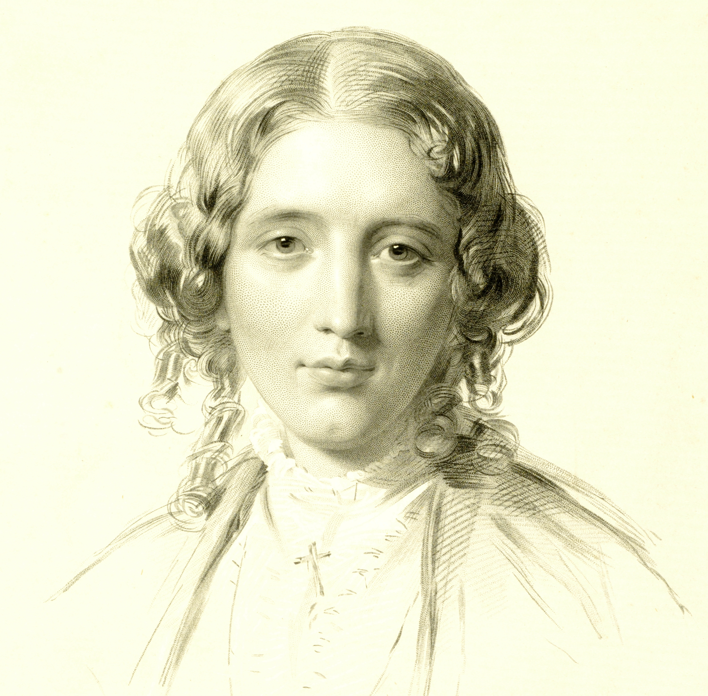

Harriet Beecher Stowe by Francis Holl, 1853 |
The Author's Portrait O, could he but have drawne his Wit Introduction by Graphic Arts Curator, Julie Mellby |
“We expect a lot of portraits,” writes Tom Hare, the William Sauter LaPorte ’28 Professor in Regional Studies and Professor of Comparative Literature at Princeton. “A good likeness seems essential, but not sufficient, because the likeness should show us something about the person that goes beyond the superficiality of appearance.” Beginning January 22, 2010, visitors to Firestone Library’s Main Gallery will have the opportunity to look for that “something” in more than 100 portraits of poets, novelists, and essayists, pulled from the holdings of the Department of Rare Books and Special Collections for the exhibition “The Author’s Portrait: ‘O, Could He But Have Drawne His Wit.’” Paintings, drawings, prints, photographs, marble sculptures, and plaster death masks, dating from 1489 to 1989, will be on view. Among the writers featured are William Shakespeare, Virgil, George Sand, Rudyard Kipling, George Bernard Shaw, and Sojourner Truth, and the artists include William Blake, Constantin Brancusi, Jean-Antoine Houdon, Willem de Passe, and Auguste Rodin. The exhibition continues through July 5, 2010. Many of the portraits stem from friendships that were formed or flourished over long afternoons of conversation between artist and sitter, such as Édouard Manet and Charles Baudelaire, William Hogarth and Henry Fielding, Lucas Cranach the Elder and Martin Luther, and Ilia Efimovich Repin and Leo Tolstoy. Animosities also developed, such as that between the artist William Marshall and the poet John Milton, who famously told his readers (writing in Greek so the artist could not understand) to “laugh at the botching artist’s mis-attempt.” Charles Dickens had Daniel Maclise throw out all his early sketches and begin again from scratch. Lord Byron was unhappy with most of the published images of himself, writing that “the frontispiece of an author’s visage is but a paltry exhibition.” Poet William Cowper reported, “I have now been sufficiently copied, and hope to have nothing more to do with painters.” William Blake’s first attempt at a posthumous frontispiece portrait of Cowper filled Lady Hesketh, Cowper’s cousin, “with a degree of horror which I shall not recover from in haste . . . and I intreat you on my knees not to suffer so horrible a representation . . . to be presented to the publick.” Still other authors sought to control the images of themselves. An ailing John Donne devised his own memorial portrait by posing for a likeness shortly before his death. The author brought a winding sheet to the artist’s studio, undressed, and wrapped himself for burial. The subtitle of the exhibition is from Ben Jonson’s poem concerning the famous portrait of Shakespeare engraved for the First Folio (1623) and attributed to Martin Droeshout the Younger. In the introduction to the annotated checklist of the exhibition, Professor Hare finds that Jonson’s “speculation that the portrait would have ‘surpasse[d] All, that was ever writt in Brasse,’ had Droeshout managed to draw Shakespeare’s wit instead of merely his face, suggests a broader statement about the powers of portraiture versus the powers of poetry.” Dr. Gwendolyn DuBois Shaw, associate professor of American art and director of the Program in Visual Studies at the University of Pennsylvania, will contribute to that discussion at the exhibition’s opening on Sunday, January 24. Her lecture, “The Ideal Pencil: Poetry, Portraiture, and Prejudice,” will focus on African American writer Phillis Wheatley and portraits of African American women writers in the 19th century. The portrait of Wheatley by Scipio Moorhead, an enslaved African American artist, inspired her to write “To S. M. a Young African Painter, On Seeing His Works,” which begins: To show the lab’ring bosom’s deep intent,
|